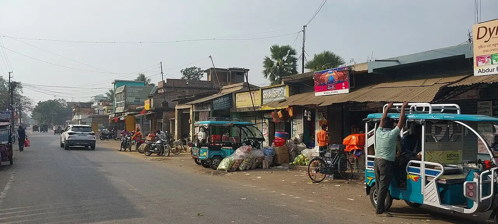

11 stories, each with its photo, the official position and its sources.

File photo · 2025 · Paikar, a village market in Birbhum district, in January 2025. File photo of the district. Photo: Pinakpani / Wikimedia Commons, CC BY 4.0 (resized)
Lives lostUchkaran area, Nanoor, Birbhum district, West Bengal
Man in custody shot dead by Bengal police
Ratan Sheikh, arrested over the 13 Nov shooting of a constable, was killed in police firing on 15 Nov. Police say he fired at them while recovering a weapon. No probe into the death reported.
File photo · 2014 · Tauru, in Nuh district, seen from the Aravalli hills in 2014. File photo of the district. Photo: ChalkOne / Wikimedia Commons, CC BY-SA 3.0 (resized)
Sabir and Gabbar, suspected of cattle smuggling, died in a pre-dawn police shootout on 15 Nov; a third man is in hospital. Police say the men fired first; a magisterial inquiry has begun.
DetentionChekkanurani police station, Madurai district, Tamil Nadu
CB-CID summons police over Madurai station death
The CB-CID summoned the three suspended police over R Balakrishnan's death, and a magistrate held an inquiry at the station on 15 Nov. Police say suicide and released CCTV; the family alleges custodial killing.
A Manipur committee called a 24-hour statewide shutdown from Sunday midnight, demanding arrests within three days over the four Naga civilians killed near New Haven. No official response reported.
SpeechBandipora, Bandipora district, Jammu and Kashmir
Page operator arrested over Kulgam attack post
Bandipora police arrested the operator of a local Facebook page for allegedly posting false claims that three CRPF personnel died in the 11 Nov Kulgam attack. Police say the post could cause panic.
Gunfire, some from anti-aircraft weapons, celebrating false reports that the army took Al-Nuhud killed one or two people and injured 25 to 45+. Accounts differ on who fired; no official statement reported.
File photo · 2005 · Chernihiv's combined heat and power plant in 2005. File photo of the region's energy grid. Photo: Incnis Mrsi / Wikimedia Commons, CC0 1.0 (resized)
Lives lostChernihiv, Odesa and other regions, Ukraine
Strikes kill four, injure 69 across Ukraine
Ukrainian authorities say strikes over one day killed four, two at an energy site in Mena, and injured 69. They report 132 drones; 41,000 Odesa families lost power. No Russian comment reported.
File photo · 2017 · Liwasang Bonifacio plaza in Manila, with an ASEAN banner, in 2017. File photo of the protest site. Photo: Judgefloro / Wikimedia Commons, CC0 1.0 (resized)
AssemblyMuntinlupa and Liwasang Bonifacio, Metro Manila, Philippines
Hundreds of marchers detained as ASEAN summit opens
Police held 209 to about 300 marchers in Muntinlupa (police and organiser counts) and several in Manila, where 12 were hurt. Police say the rallies lacked permits; a journalists' union reports 22 media workers harassed.
Israeli troops detained AFP contributor Mohammad Ateeq in a 1:30am raid on 15 Nov, his wife says. The military says he is suspected of Hamas ties; AFP asks for evidence or his release.
At least 18 attacks hit power infrastructure in nine-plus states from 20 Oct to 2 Nov. The UN's Denise Brown says dialysis stopped and women give birth without light. No side has claimed them.
File photo · 2011 · A street in Acre's Old City in 2011. File photo of the city. A child's face is blurred. Photo: Adam Jones / Wikimedia Commons, CC BY-SA 2.0 (resized, faces blurred)
Right upheldAcre (Akko), northern Israel
Officer questioned over Acre driver shooting
Israel's police watchdog questioned an off-duty Border Police officer who shot and seriously wounded a driver on 14 Nov; he was put under five days' house arrest. Police say the driver endangered pedestrians.


.jpg){kind=link}


.jpg){kind=link}
_-_Israel_-_01_(5693197091).jpg){kind=link}